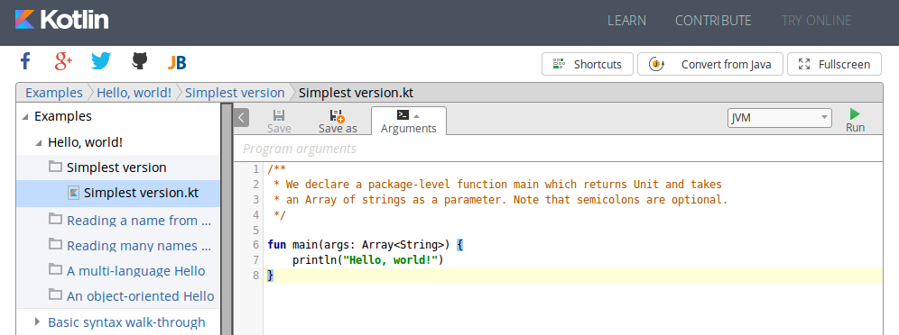
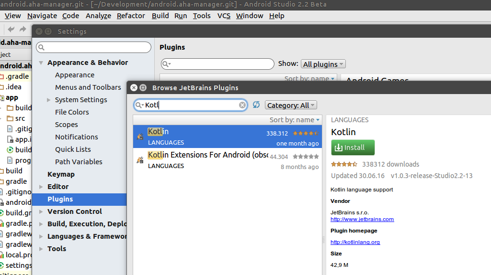
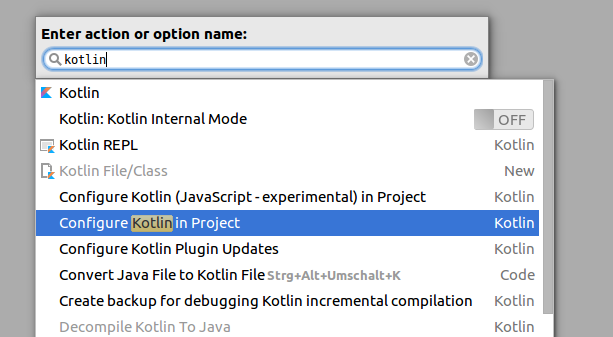

Russisch unterwegs!
Kotlin für die
moderne Android-Entwicklung

? for help

Russische Insel
im finnischen Golf, 32km vor Petersburg
statisch typisierte
Allzweck-Sprache
für JVM und Browser
Datenblatt
Freie Software
APL 2.0
backed by JetBrains
20 Vollzeit & Community
„dogfooding“: 0,5 Mio. LOC
backed by JetBrains
20 Vollzeit & Community
Hello Kotlin!
Im Browser mitmachen & ausprobieren
 http://try.kotl.in/Android Studio: Plugin installieren
Kotlin im Projekt aktivieren
Kotlin in Action [1]
import java.util.*
fun main(args: Array<String>) {
val name = if (args.size > 0) args[0] else "Publikum"
val zuschauer = Gast(name, title = Title.wertes)
println(zuschauer)
println("Hallo ${zuschauer.title} ${zuschauer.name}")
}
data class Gast(val name: String, var zeit: Date = Date(),
val title: Title?)
enum class Title { Herr, Frau, wertes }
← Optionale Semikolons
← Top-level function
← Type inference &
optional/named Params
← Expressions im String
← Data Class
← val vs. var
Kotlin & Android
Prägnanz
Prägnanz – Die Basics
Type inference
Typangabe üblichweise nur an Schnittstellen
Konstrukte
`;` optional, kein `new`, Default: `public`, `data class`
Keywords
`fun`, `Int`, `val`, …
Ausdrücke
`if`…`else` ist ein Ausdruck, String Templates, `listOf(…)`, …
Konventionen
Data Classes – Kotlin
... währenddessen im Java-Land
public final class Gast {
@NotNull
private final String name;
@NotNull
private Date zeit;
@Nullable
private final Title title;
@NotNull
public final String getName() {
return this.name;
}
@NotNull
public final Date getZeit() {
return this.zeit;
}
public final void setZeit(@NotNull Date date) {
checkParameterIsNotNull(date, "<set-?>");
this.zeit = date;
}
@Nullable
public final Title getTitle() {
return this.title;
}
public Gast(@NotNull String name,
@NotNull Date zeit,
@Nullable Title title) {
checkParameterIsNotNull(name, "name");
checkParameterIsNotNull(zeit, "zeit");
this.name = name;
this.zeit = zeit;
this.title = title;
}> public Gast(String string, Date date,
Title title, int n) {
if ((n & 2) != 0) {
date = new Date();
}
this(string, date, title);
}
@NotNull
public final String component1() {
return this.name;
}
@NotNull
public final Date component2() {
return this.zeit;
}
@Nullable
public final Title component3() {
return this.title;
}
@NotNull
public final Gast copy(@NotNull String name,
@NotNull Date zeit,
@Nullable Title title) {
checkParameterIsNotNull(name, "name");
checkParameterIsNotNull(zeit, "zeit");
return new Gast(name, zeit, title);
}
public String toString() {
return "Gast(name=" + this.name +
", zeit=" + this.zeit +
", title=" + this.title + ")";
}
public int hashCode() {
String s = this.name;
Date d = this.zeit;
Title t = this.title;
return ((s != null ? s.hashCode() : 0) * 31
+ (d != null ? d.hashCode() : 0)) * 31
+ (t != null ? t.hashCode() : 0);
}
public boolean equals(Object object) {
if (this == object) return true;
if (!(object instanceof Gast))
return false;
Gast gast = (Gast)object;
if (!areEqual(this.name, gast.name)
|| !areEqual(this.zeit, gast.zeit)
|| !areEqual(this.title, gast.title))
return false;
return true;
}
}Übersichtlich, nein?